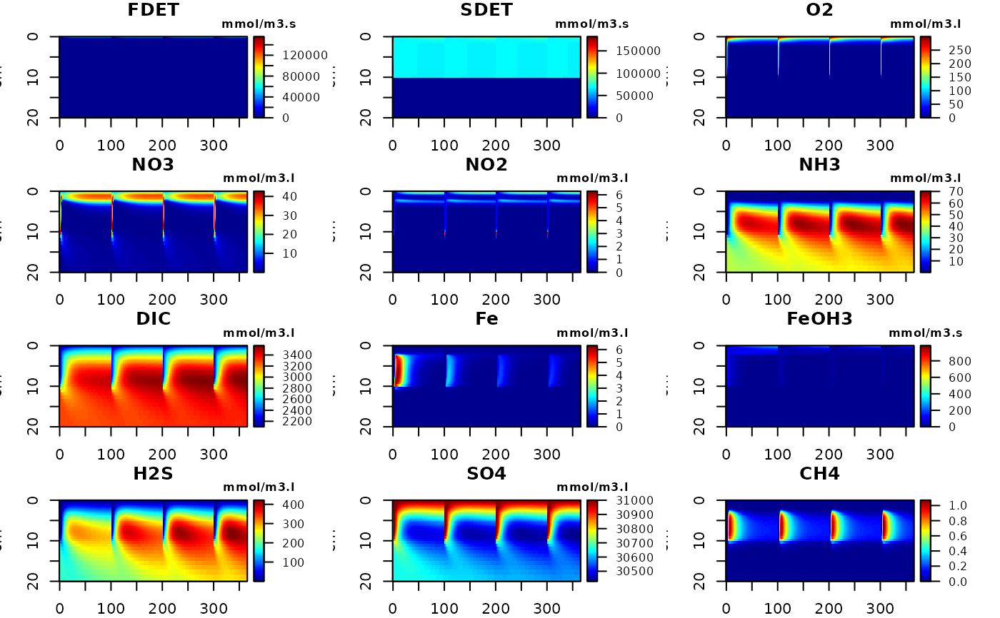
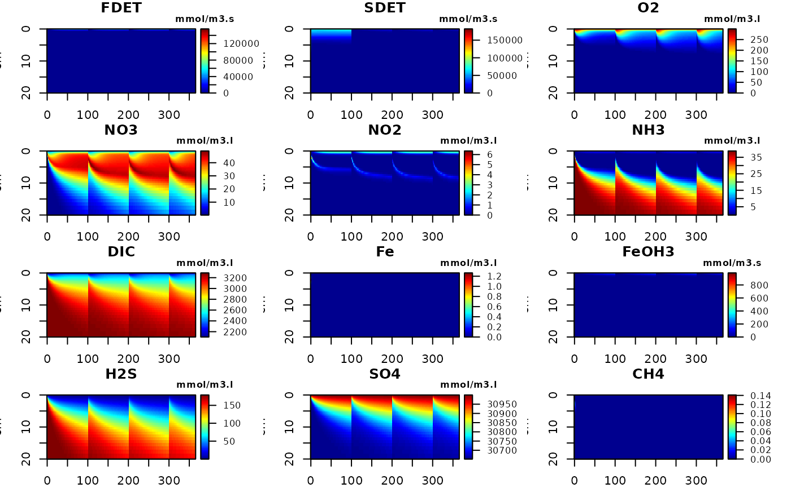
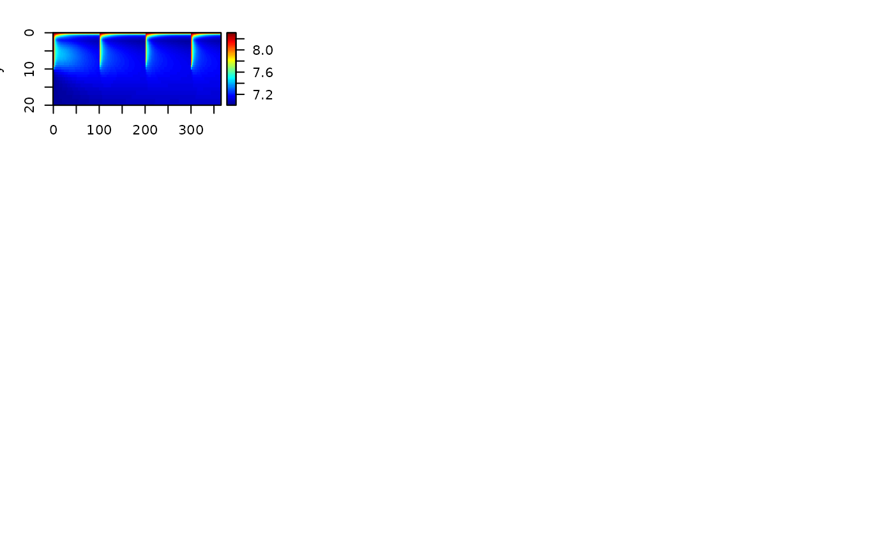

Dynamic solution of perturbed system.
FESDIAperturb.RdFESDIAperturb dynamically runs the FESDIA model with event-like perturbations.
FESDIAperturbSettings and FESDIAperturbFluxes retrieve the settings and perturbation fluxes.
Usage
FESDIAperturb (parms = list(), times = 0:365, spinup = NULL, yini = NULL,
gridtype = 1, Grid = NULL, porosity = NULL, bioturbation = NULL,
irrigation = NULL, surface = NULL, diffusionfactor = NULL,
dynamicbottomwater = FALSE, perturbType = "mix",
perturbTimes = seq(from = 0, to = max(times), by = 365),
perturbDepth = 5, concfac = 1,
CfluxForc = NULL,FeOH3fluxForc = NULL, CaPfluxForc = NULL,
O2bwForc = NULL, NO3bwForc = NULL, NO2bwForc = NULL,
NH3bwForc = NULL, FebwForc = NULL, H2SbwForc = NULL,
SO4bwForc = NULL, CH4bwForc = NULL, PO4bwForc = NULL,
DICbwForc = NULL, ALKbwForc = NULL, wForc = NULL,
biotForc = NULL, irrForc = NULL, rFastForc = NULL,
rSlowForc = NULL, pFastForc = NULL, MPBprodForc= NULL,
gasfluxForc = NULL, HwaterForc = NULL, ratefactor = NULL,
verbose = FALSE, ...)
FESDIAperturbFluxes(out, which = NULL)
FESDIAperturbSettings(out)Arguments
- parms
A list with parameter values.Available parameters can be listed using function FESDIAparms.
See details of FESDIAparms.
- times
Output times for the dynamic run
- spinup
Spinput times for the dynamic run; not used for output; the outputted simulation starts from the final values of the spinup run.
- CfluxForc, FeOH3fluxForc, CaPfluxForc
NULLor a list, detailing the forcing function for the deposition fluxes of organic carbon, FeP and CaP. IfNULLthen the corresponding parameter value (Cflux, FeOH3flux, CaPflux) is used. If alist, it should contain either a data time series (list(data = )) or parameters determining the periodicity of the seasonal signal (defined aslist(data = NULL, amp = 0, period = 365, phase = 0, pow = 1, min = 0). see details.- O2bwForc, NO3bwForc, NO2bwForc, NH3bwForc, CH4bwForc, FebwForc, SO4bwForc, H2SbwForc, PO4bwForc, DICbwForc, ALKbwForc
NULLor a list, detailing the forcing function for the boundary concentrations. IfNULLthen the corresponding parameter value (O2bw, NO3bw, NO2bw, NH3bw, CH4bw, Febw, SO4bw, H2Sbw, PO4bw, DICbw, ALKbw) is used. If alist, it should contain either a data time series (list(data = )) or parameters determining the periodicity of the seasonal signal (defined aslist(data = NULL, amp = 0, period = 365, phase = 0, pow = 1, min = 0). see details.- wForc, biotForc, irrForc
NULLor a list, detailing the forcing function forthe advection, bioturbation and irrigation rates (units of cm/d, cm2/d and /d). IfNULLthen the corresponding parameter value (w, biot, irr) is used. If alist, it should contain either a data time series (list(data = )) or parameters determining the periodicity of the seasonal signal (defined aslist(data = NULL, amp = 0, period = 365, phase = 0, pow = 1, min = 0). see details.- rFastForc, rSlowForc, pFastForc
NULLor a list, detailing the forcing function for the decay rate of fast and slow detritus, and the fraction of fast detritus in organic flux (units of /d, /d, -). IfNULLthen the corresponding parameter value (rFast, rSlow, pFast) is used. If alist, it should contain either a data time series (list(data = )) or parameters determining the periodicity of the seasonal signal (defined aslist(data = NULL, amp = 0, period = 365, phase = 0, pow = 1, min = 0). see details.- MPBprodForc
NULLor a list, detailing the forcing function for the maximal microphytobenthos production rate (units of mmolO2/m3/d). IfNULLthen the corresponding parameter value (MPBprod) is used. If alist, it should contain either a data time series (list(data = )) or parameters determining the periodicity of the seasonal signal (defined aslist(data = NULL, amp = 0, period = 365, phase = 0, pow = 1, min = 0). see details.- gasfluxForc
NULLor a list, detailing the forcing function for the intensity of exchange with the air (units of cm/d). IfNULLthen the corresponding parameter value (gasflux) is used. If alist, it should contain either a data time series (list(data = )) or parameters determining the periodicity of the seasonal signal (defined aslist(data = NULL, amp = 0, period = 365, phase = 0, pow = 1, min = 0). see details. A gasflux>0 represents exchange rate for O2 and DIC, not for other dissolved substances. There can still be deposition of C, FeP and CaP.- HwaterForc
NULLor a list, detailing the forcing function for the height of the water above the sediment - ifdynamicbottomwater= TRUE. IfNULLthen the corresponding parameter value (Hwater) is used. If alist, it should contain either a data time series (list(data = )) or parameters determining the periodicity of the seasonal signal (defined aslist(data = NULL, amp = 0, period = 365, phase = 0, pow = 1, min = 0). see details.- ratefactor
NULLor a list, detailing the forcing function for the biogeochemical rate multiplication factor. If not specified (orNULL), then it is assumed to be 1 and constant. If alist, it should contain either a data time series (list(data = )) or parameters determining the periodicity of the seasonal signal (defined aslist(data = NULL, amp = 0, period = 365, phase = 0, pow = 1, min = 0). see details.- dynamicbottomwater
If
TRUE, then the concentrations in the water overlying the sediment will also be dynamically described, and with water height equal toHwater. Note that this will slow down the simulation.- gridtype
Type of grid:
1for cartesian,2for cylindrical,3for spherical.- Grid
If specified: either an object, as returned by
setup.grid.1Dfrom the packageReacTran, a vector of length 101 with the transport distances (from mid to mid of layers, upper interface = diffusive boundary layer), or one number with the constant layer thickness. IfNULL, it is defined assetup.grid.1D(x.up = 0, dx.1 = 0.01, N = 100, L = 100), i.e. the total length is 100 cm, the first layer is 0.01 cm thick and layers are increasing with depth for 100 layers.- porosity
If specified, either an object with porosities ([-]) as returned by
setup.prop.1Dfrom the packageReacTran, a vector of length 101 with the porosities defined at the layer interfaces, or one number with the constant porosity. IfNULL, it is defined by the parameterspor0,pordeepandporcoeffas:(pordeep + (por0 - pordeep) * exp(-pmax(0, x.int)/porcoeff)), wherex.intis the distance, from the surface of the layer interface. Note that the porosity values should be consistent with theGrid- and should be inbetween 0 and 1.- bioturbation
If specified, either an object with bioturbation rates (units [cm2/d]) as returned by
setup.prop.1Dfrom the packageReacTran, a vector of length 101 with the bioturbation defined at the layer interfaces, or one number with the constant bioturbation. IfNULL, it is defined by the parametersbiot,biotdepthandbiotattas:biot * exp(-pmax(0, (x.int-biotdpeth))/biotatt), wherex.intis the distance, from the surface of the layer interface. Note that the bioturbation values should be consistent with theGrid.- irrigation
If specified, either an object with irrigation rates (units [/d]) as returned by
setup.prop.1Dfrom the packageReacTran, a vector of length 100 with the irrigation rates defined at the layer centres, or one number with the constant rates. IfNULL, it is defined by the parametersirr,irrdepthandirrattas:irr * exp(-pmax(0, (x-irrdepth)/irratt)), wherexis the distance, from the surface, of the layer centres. Note that the irrigation values should be consistent with theGrid.- surface
If specified, either an object with surface areas (units [cm2]) as returned by
setup.prop.1Dfrom the packageReacTran, a vector of length 101 with the surface areas defined at the layer interfaces, or one number with the constant surface area. IfNULL, it is defined by the parametergridtype, and theGridas:surface = 1forgridtype == 1,surface = rev(2*pi*Grid$x.int)forgridtype == 2andsurface = rev(pi*(Grid$x.int)^2)forgridtype == 3.Note that the surface values should be consistent with the
Grid.- diffusionfactor
The multiplication factor necessary to go from molecular diffusion to effective sediment diffusion, i.e. that takes into account tortuosity. If specified, either an object with these factors ([-]) as returned by
setup.prop.1Dfrom the packageReacTran, a vector of length 101 with these factors defined at the layer interfaces, or one number with the constant factor. IfNULL, it is set equal to the porosity. Note that the factors should be consistent with theGrid.- yini
The condition at which to inialise the dynamic simulation, i.e. a vector or matrix, with the values of
FDET, SDET, O2, NO3, NH3, ODU, PO4, FeP, CaP, DIC, each in 100 layers, and in that order. IfNULL, the default, then the steady-state solution based on the mean forcing is used (and obtained with FESDIAsolve) .- perturbType
how to perturb, one of "mix", "deposit", "erode".
- perturbTimes
times at which the perturbations should take place.
- perturbDepth
the depth of the perturbation, in cm.
- concfac
only when perturb = "deposit": the factor at which the available concentration should be increased or decreased.
- verbose
If TRUE, will write progession to the screen .
- out
an output object returned by FESDIAperturb or FESDIAdyna.
- which
if not
NULL, a vector with names of the species from which to return the fluxes.- ...
Any argument passed to the dynamic solver (ode.1D[deSolve])
Value
A matrix of class FESDIAdyn and deSolve, as generated by the solver from R-package deSolve (ode.1D).
It contains several output columns, the first is time. The meaning and units of these columns can be assessed via the R-functions:
FESDIAsvar(), FESDIA1D(), FESDIA0D(). See FESDIA0D.
The instantaneous release/gain is saved in the attributes perturbFluxes and the settings in attributses perturbSettings. They can be retrieved with functions
FESDIAperturbFluxes, and FESDIAperturbSettings
Details
Several parameters can also be described as forcing functions. They are:
Cflux, FeOH3flux, CaPflux, O2bw, NO3bw, NH3bw,
Febw, CH4bw, SO4bw, H2Sbw, PO4bw, DICbw, w,
biot, irr, rFast, rSlow, pFast, MPBprod, gasflux, Hwater.
The forcing functions are prescribed as a list that either contains a data series or specifies a periodic signal.
The list is defined as: list(data = NULL, amp = 0, period = 365, phase = 0, pow = 1, min = 0)
Forcing functions a data series are set with item
datacontains time series for the parameter - a matrix with times (first column) and values, second column. The values should be in the same units as the parameters.The time series should embrace both arguments
timesandspinup.if a periodic signal, the list should contain
amp, period, phase, powandmin: parameters determining the periodicity of the seasonal signal in the same units as the parameters. From this the forcing function time series is estimated, e.g. for CfluxForc as:max(min, Cflux*(1 + (amp*sin((times-phase)/period*2*pi))^pow), whereCfluxis the parameter value. Used only ifdataisNULL. Ifamp= 0, orpow= 0, then the forcing will be kept constant and equal to the parameter value.
Note
The model application starts by estimating the steady-state condition
of the model. This steady-state condition is then used as a starting
condition for a dynamic simulation, with perturbations as in perturbTimes.
Mixing will homogenise the perturbed depth of the sediment (perturbType = "mix").
Erosion will remove the perturbed depth of the sediment (perturbType = "erode". Deposition will add a layer of sediment (perturbType = "deposit".
All these events can be combined; the sequence of events is as provided, i.e.
perturbType = c("mix", "erode") will not give the same results as perturbType = c("erode", "mix").
References
Soetaert K, PMJ Herman and JJ Middelburg, 1996a. A model of early diagenetic processes from the shelf to abyssal depths. Geochimica Cosmochimica Acta, 60(6):1019-1040.
Soetaert K, PMJ Herman and JJ Middelburg, 1996b. Dynamic response of deep-sea sediments to seasonal variation: a model. Limnol. Oceanogr. 41(8): 1651-1668.
Examples
# ========================================
# One perturbation at the start
# ========================================
out <- FESDIAperturb()
#> Error in FESDIAperturb(): FESDIAperturb requires either data.frame with perturb time, type or depth
par(mar = c(3,3,3,3))
image2D(out, ylim = c(20, 0), which = 1:12, mfrow = c(4, 3))
#> Error: object 'out' not found
# ========================================
# Mixing at selected times
# ========================================
out2 <- FESDIAperturb(perturbTime = c(0, 100, 200, 300),
perturbType = "mix", perturbDepth = 10)
#>
#> Finish spinup!
#>
#> tindex after spinup: 0
image2D(out2, ylim = c(20, 0), which = 1:12, mfrow = c(4, 3))

FESDIAbudgetO2(out)
#> Error: object 'out' not found
# ========================================
# Erosion at selected times
# ========================================
out3 <- FESDIAperturb(perturbTime = c(0, 100, 200, 300),
perturbType = "erode", perturbDepth = 5)
#>
#> Finish spinup!
#>
#> tindex after spinup: 0
image2D(out3, ylim = c(20, 0), which = 1:12, mfrow = c(4, 3))

PertFluxes <- FESDIAperturbFluxes(out3)
print(PertFluxes)
#> time FDET SDET O2 NO3 NO2 NH3
#> Fluxes 0 -6000.000 -269844.904 -101.8914 -38.55880 -2.093360 76.28688
#> Fluxes.1 100 -5993.637 -67047.534 -156.7065 -106.06732 -1.307490 102.24838
#> Fluxes.2 200 -5993.638 -4645.748 -212.0604 -99.67983 -1.260267 102.18975
#> Fluxes.3 300 -5993.638 -4535.077 -215.9677 -99.63412 -1.260092 102.17800
#> DIC Fe FeOH3 H2S SO4 CH4 PO4
#> Fluxes 14.98051 -2.01725173 0 0 1255.795 -1.037216892 -468.51131
#> Fluxes.1 21.34133 -0.01315746 0 0 1818.565 -0.003898525 -46.65665
#> Fluxes.2 23.00958 -0.01174303 0 0 1965.826 -0.002565092 -46.12171
#> Fluxes.3 23.24754 -0.01166850 0 0 1987.566 -0.002366881 -45.97766
#> FeP CaP Pads ALK FeOH3B Mn
#> Fluxes 294.6013 -550.0215 -1.417194e-01 1202.401 -300.33600 -0.88673412
#> Fluxes.1 411.5000 -745.2026 1.485701e-07 1726.905 -51.87704 -0.07212761
#> Fluxes.2 432.4354 -780.7182 2.096782e-10 1782.063 -52.47637 -0.05841642
#> Fluxes.3 437.7560 -789.6059 5.074661e-09 1798.644 -52.63301 -0.05539541
#> MnO2 MnO2B
#> Fluxes -50.69216 -253.21829
#> Fluxes.1 -31.49712 -57.01200
#> Fluxes.2 -31.80519 -57.56227
#> Fluxes.3 -31.86271 -57.70268
FESDIAperturbSettings(out3)
#> $perturbType
#> $perturbType[[1]]
#> [1] "erode"
#>
#> $perturbType[[2]]
#> [1] "erode"
#>
#> $perturbType[[3]]
#> [1] "erode"
#>
#> $perturbType[[4]]
#> [1] "erode"
#>
#>
#> $perturbTimes
#> [1] 0 100 200 300
#>
#> $perturbDepth
#> $perturbDepth[[1]]
#> [1] 5
#>
#> $perturbDepth[[2]]
#> [1] 5
#>
#> $perturbDepth[[3]]
#> [1] 5
#>
#> $perturbDepth[[4]]
#> [1] 5
#>
#>
#> $concfac
#> [,1] [,2] [,3] [,4] [,5] [,6]
#> [1,] 1 1 1 1 1 1
#> [2,] 1 1 1 1 1 1
#> [3,] 1 1 1 1 1 1
#> [4,] 1 1 1 1 1 1
#>
# ========================================
# Several subsequent perturbations
# ========================================
out4 <- FESDIAperturb(perturbTime = c(0, 100, 200, 300),
perturbType = c("mix", "erode"), perturbDepth = c(10, 5))
#>
#> Finish spinup!
#>
#> tindex after spinup: 0
image2D(out4, ylim = c(20, 0), which = 1:12, mfrow = c(4, 3))
pH <- FESDIApH(out4)
plot3D::image2D(pH, ylim = c(20,0), y = FESDIAdepth(out4), x = out4[,1])
